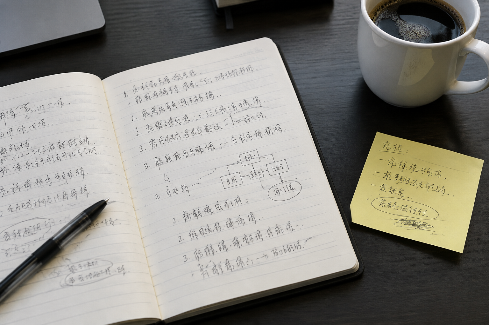

北京笔迹鉴定资料整理：同一天形成的记录为何仍有差别
上午的会议记录写得端正，下午的便条却很潦草。同一天的两份材料放在一起，差异有时来自用途和书写环境。

日期相同还不够
整理北京笔迹鉴定资料时，日期是重要线索，却不是唯一的分组依据。会议上边听边记、独自在桌前誊写、站着签收，各自面对的时间压力和支撑条件不同。把形成场景一起记下来，能解释一部分字形变化；没有记录的场景应保留未知，不要根据字迹整齐程度倒推。
同类内容放在一起阅读
较长的笔记适合看连续行文，短便条适合看快速书写。模仿笔迹参考材料若只选择最工整的一页，很容易忽略平时写法。可以按长文、便条、表格填写分别整理，再在每组里观察重复字的结构。这样既保留差异，也不会把不同条件下的材料硬拼成一个标准字样。
签名样本另做目录
模仿签名关注固定姓名的组合，模仿签字还常涉及受限栏位中的落款。它们与会议笔记的书写范围不同，宜单独编号，并注明所在文件和位置。同一日期出现的多个签名也应分别保留，而不是挑出最流畅的一次后删除其余样本。
交接时说明材料关系
一份实用清单至少写明文件名、页码、日期和来源。完整页与局部图使用同一个编号，收到补充材料后继续追加。对整理人员而言，这比反复改图片名称更省事，也能让后续比较清楚知道：哪些差别来自已知条件，哪些仍需进一步核对。